ジュリアスのレジェンダリー・レリックとスキル攻略 | ヒーローウォーズ・アライアンス
- 著者：アレクサンドレ・ドミンゴス。 。
最近の対人戦テストで、ジュリアスは特に興味深いタンクの一人だった。レジェンダリー・レリックによって、重ねたシールドの一つひとつに意味が生まれる。シールドは傷ついた味方を救い、壊れると回復を発生させ、弱体効果を解除し、さらにダメージ役が敵のアーマーを貫く手助けもできる。進歩チームが好きなら、仕組みを理解しておきたい猫だ。
私が気に入っている中核の組み合わせは ジュリアス、ジャッジ、ネブラ、エヴァ。エヴァとジュリアスのレリックを十分に強化した状態で、この組み合わせが約 970,000のパワー で、パワーが100万を超えるチームに勝つのを確認している。ネブラの攻撃バフ、回復、弱体解除が、この結果に大きく貢献している。ここではタリスマンの選び方と各スキルを説明し、この組み合わせが機能する理由を解説する。
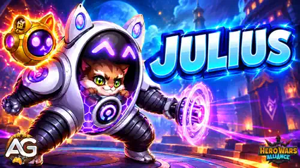

📋 ジュリアス攻略の目次
ヒーローウォーズ・アライアンスのジュリアスとは？
突破できないシールドを持つ、最高にもふもふな守り手。仲間を守り、攻撃し、何より昼寝をする。そんな遊び心のある性格の裏には、シールドで生存力、回復、速度、チームの火力をつなぐ前衛タンクの実力がある。

- メインクラス： タンク
- 配置： 前衛
- 主要ステータス： 力
- 陣営： 進歩の道
- ソウルストーンの入手方法： イベントとヒロイックチェスト
- 相性のよいヒーロー： ジャッジ、アイザック、ネブラ、エヴァ、ララ・クロフト、ジンジャー、ポラリス、アストリッドとルーカス
- ヒドラ戦の評価ランク： A+
進歩陣営の味方は、ジュリアスの必殺技から追加の回復を受け、シールドで守られている間はより大きな速度ボーナスを得る。レリックはこの支援をさらに広げ、最も傷ついた味方の保護、ほかのシールドからの回復、シールド付与時の弱体解除、アクティブなシールドごとのアーマー貫通を追加する。
私のテストでは、ジャッジの存在が重要だった。ジャッジのシールドが後衛のエヴァを守り、前衛のジュリアスの防御も補強するからだ。この追加の保護は、特にレオネル相手で役立つ。ジャッジがいないジュリアスは、編成全体を守りきるのがかなり難しくなる場合がある。
ジュリアスの長所と短所 - ヒーローウォーズ・アライアンス
✅ 長所
- 複数のシールドでチーム全体と最も危険な状態の味方を守れる。
- 壊れたシールドや効果時間が切れたシールドが回復につながる。
- レベル20では、味方がシールドを受け取ったときの弱体解除が追加される。
- シールドで守られた進歩陣営の味方は、攻撃とスキルの速度がさらに上がる。
- レベル30では、アクティブなシールドごとのアーマー貫通が追加される。
❌ 短所
- レオネルとオヤは、シールドを軸にした保護を脅かす。
- エヴァを中心とする組み合わせは、ネブラがいないと価値が大きく下がる。
- 最も強力な攻撃支援を使うには、レリックのレベル30が必要。
- コピーキャット装置のシールドを味方に広げるには、5秒間シールドを維持する必要がある。
- 大きなダメージと直接的な行動妨害は、味方に頼ることになる。
ジュリアス - タリスマン別の最大ステータス比較
ジュリアスに戦闘で何を担わせるか決める前に、この2つの最大育成構成を比較しよう。以下のスキル例でも、ここに示す物理攻撃の値を使用する。 119,143 が肉球ポジティブの場合、 125,143 がニャン璧の場合の値となる。
| ステータス | 肉球ポジティブのタリスマン | |
|---|---|---|
| 4,275 | 4,275 | |
| 4,109 | 4,109 | |
| 16,185 | 14,185 | |
| 1,522,136 | 1,442,136 | |
| 119,143 | 125,143 | |
| 27,931 | 27,931 | |
| 32,846 | 32,846 | |
| 24,013 | 24,013 | |
| 0 | 0 | |
| 0 | 0 | |
| 19,800 | 0 | |
| 0 | 0 | |
| 13,567 | 13,567 | |
| 0 | 0 | |
| 9,053 | 17,303 | |
| 0 | 0 | |
| 0 | 0 | |
| 297,274 | 302,724 |
上のタフネス合計は、構成全体を最大まで育成したときの値。ニャン璧の3つの再抽選枠が与えるのは タフネス6,600であり、表示された構成間の 8,250 という差を、再抽選ボーナスだけの差と考えてはいけない。
ジュリアスのタリスマン攻略 - ヒーローウォーズ・アライアンス
ボーナスが有効になるのは、戦闘用に装備したタリスマンだけ。スキンは選択した見た目に関係なく、解放済みのボーナスが維持されるが、この2つのタリスマンはどちらかを選ぶ必要がある。シールド支援では ニャン璧のタリスマン を優先している。物理攻撃がジュリアスの多くのスキルを強化するためだ。
1 - 肉球ポジティブのタリスマン
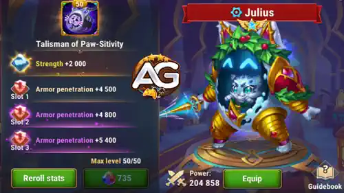
レベル50では、力+2,000によって ヘルス +80,000 と 物理攻撃 +2,000が得られる。再抽選による合計ボーナスは アーマー貫通 +19,800。追加の純粋なヘルスを重視する場合や、ジュリアス自身の攻撃でより多くのアーマーを貫きたい場合に選ぼう。
| タリスマン | 主要ステータス | 再抽選枠の合計ボーナス |
|---|---|---|
肉球ポジティブのタリスマン |
力 +2,000 |
アーマー貫通 +19,800 |
| 枠1 | 枠2 | 枠3 | 再抽選ボーナス合計 |
|---|---|---|---|
| アーマー貫通 +6,600 | アーマー貫通 +6,600 | アーマー貫通 +6,600 | アーマー貫通 +19,800 |
2 - ニャン璧のタリスマン
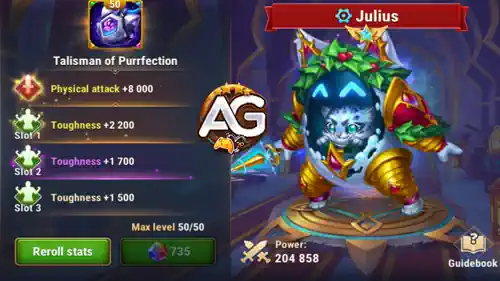
レベル50では、メイン枠から 物理攻撃 +8,000が得られ、再抽選による合計ボーナスは タフネス +6,600となる。この構成は肉球ポジティブより物理攻撃が6,000高く、シールド、必殺技の回復、一時的な防御力、レベル30のアーマー貫通バフを強化する。
| タリスマン | 主要ステータス | 再抽選枠の合計ボーナス |
|---|---|---|
ニャン璧のタリスマン |
物理攻撃 +8,000 |
タフネス +6,600 |
| 枠1 | 枠2 | 枠3 | 再抽選ボーナス合計 |
|---|---|---|---|
| タフネス +2,200 | タフネス +2,200 | タフネス +2,200 | タフネス +6,600 |
アレクサンドレのヒント： 私の基本の選択はニャン璧。物理攻撃が6,000増えることで、必殺技のシールド耐久値が30,000、コピーキャット装置の耐久値が19,800増え、守りの踏み込みによるアーマー貫通もシールド1つあたり900増える。これらの改善は編成全体に役立つ。ジュリアスに追加のヘルス80,000が必要なときは、肉球ポジティブも選択肢に残る。実際に戦う相手に対して、どちらで生き残れるかを比較しよう。
ジュリアスのレジェンダリー・レリックとスキルの強化優先度 - ヒーローウォーズ・アライアンス
ジュリアスがシールドを回復、弱体解除、速度、アーマー貫通につなげる仕組みを解説する。タリスマン別の計算と、各スキルの明確な優先度も確認しよう。
基本スキルのおすすめ強化順： 防御のニャン作、コピーキャット装置、ニャン璧な反射神経、最後に九つの命のエンジン。以下では、スキルをゲーム内の順番で掲載している。九つの命のエンジンも有用だが、基本の防御ボーナスは1.5秒しか続かない。
レジェンダリー・レリックの強化段階： レベル1で肉球の好影響、レベル10で防御のニャン作の強化、レベル20で九つの命のエンジンの強化、レベル30で守りの踏み込みが解放される。解放順は固定されており、ここでの優先度は戦闘での価値を説明するもので、前のレベルを飛ばせるという意味ではない。ジュリアスのレリックは、ヘルスと物理攻撃も増加させる。
計算の前提： 例では、上に示した2つの最大育成構成を使用し、一時的な戦闘バフとコピーキャット装置の累積効果は含めていない。レリックのステータス増加量は、各到達レベルまでの累計ボーナスとして示しており、例の構成にもう一度加算するものではない。実際の数値は、戦闘中のジュリアスのステータスによって変わる。
1 - 防御のニャン作 (基本スキル・必殺技)
ゲーム内の説明： あらゆるダメージを吸収するシールドでチームを守る。シールドが破壊されるか効果時間が切れると、ジュリアスと味方全員が回復する。進歩の道のヒーローは2倍の回復を受ける。
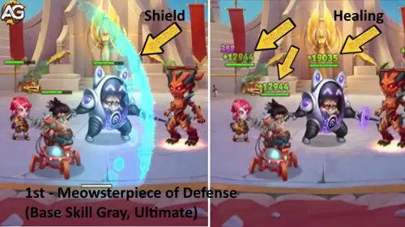
スキル解説： 必殺技はまず全員を守り、そのシールドが壊れるか時間切れになるとチームを回復する。これが保護サイクルの土台になる。シールドの耐久値は 物理攻撃の500% + 6000、通常の回復量は 物理攻撃の75% + 9600で、進歩陣営のヒーローはその2倍の量を受け取る。そのため、シールドの消失は防御の終わりではなく、立て直しのタイミングにもなる。
タリスマン別の計算式： 1: 肉球ポジティブのタリスマン
- シールドの耐久値： 物理攻撃の500% + 6000 (5 × 119,143 + 6,000 = 601,715)
- 回復量： 物理攻撃の75% + 9600 (0.75 × 119,143 + 9,600 = 98,957.25)
- 進歩陣営への回復量： 物理攻撃の150% + 19200 (1.5 × 119,143 + 19,200 = 197,914.5)
タリスマン別の計算式： 2: ニャン璧のタリスマン
- シールドの耐久値： 物理攻撃の500% + 6000 (5 × 125,143 + 6,000 = 631,715)
- 回復量： 物理攻撃の75% + 9600 (0.75 × 125,143 + 9,600 = 103,457.25)
- 進歩陣営への回復量： 物理攻撃の150% + 19200 (1.5 × 125,143 + 19,200 = 206,914.5)
スキル情報： シールド、回復。スキルレベル：120。
強化優先度： 非常に高い — チーム全体の保護と回復が最優先の役割。必殺技のシールドを強化すると味方全員のために時間を稼げ、進歩陣営のヒーローには追加回復の恩恵もある。
防御のニャン作 (強化スキル、レジェンダリー・レリック: レベル 10)
ゲーム内の説明： シールドが破壊されるか効果時間が切れると、そのシールドで守られていたヒーローのヘルスが回復する。防御のニャン作には適用されない。進歩の道のヒーローは2倍の回復を受ける。

スキル解説： ほかのシールドも、壊れたり時間切れになったりしたときに回復を発生させるようになる。1人を守るシールドならそのヒーローが回復し、チーム全体を守るシールドなら守られていた全員が回復する。必殺技にはもともと回復があるため、この強化で防御のニャン作に同じ回復効果がもう1回追加されるわけではない。進歩陣営のヒーローは2倍の回復を受ける。
この強化は、どのシールドで回復を発動できるかを変更する。ここでは別の回復係数が指定されていないため、上の数値例は基本の必殺技だけを説明している。
アレクサンドレのヒント： シールドが壊れても、その価値がすべて失われるわけではなくなる。1人を守るシールドはそのヒーローを回復し、チームシールドはチームを回復する。これも、ジュリアスの周囲にシールドを追加できる味方を置きたい理由の一つだ。
レリックの解放レベル： 10
| 項目 | 値 |
|---|---|
| 必要なレリックの欠片 (レベル 1–10) |  280 280 |
| レリックの欠片の累計 (レベル 0–10) | 330 |
| ヘルスボーナスの累計 (レベル 0–10) | |
| 物理攻撃ボーナスの累計 (レベル 0–10) |
強化優先度： 非常に高い — チームのより多くのシールドを回復につなげ、編成全体の継続的な保護を強化する。
2 - コピーキャット装置 (基本スキル)
ゲーム内の説明： パッシブ：ジュリアスがシールドを得るたびに、戦闘開始時の物理攻撃を基準として、戦闘終了まで物理攻撃が上がる。アクティブ：あらゆるダメージを吸収するシールドをジュリアスに付与する。5秒間維持できた場合、その残りの耐久値が味方それぞれにコピーされる。
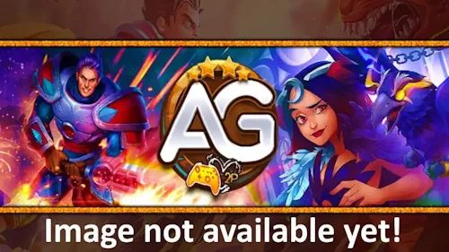
スキル解説： アクティブ効果のシールドは、まずジュリアスに付与される。5秒間維持できると、各味方にその 残りの 耐久値がコピーされる。5秒間に吸収したダメージの分だけ、コピーされる量は減る。パッシブ効果では 戦闘開始時の物理攻撃の8% が、ジュリアスがシールドを得るたびに加算され、その増加は戦闘終了まで続く。各累積分は開始時の値を使い、増え続ける合計値を基準に8%を再計算するわけではない。
タリスマン別の計算式： 1: 肉球ポジティブのタリスマン
- シールドの耐久値： 物理攻撃の330% + 24000 (3.3 × 119,143 + 24,000 = 417,171.9)
- シールドを得るたびに増える物理攻撃： 戦闘開始時の物理攻撃の8% (0.08 × 119,143 = 9,531.44)
タリスマン別の計算式： 2: ニャン璧のタリスマン
- シールドの耐久値： 物理攻撃の330% + 24000 (3.3 × 125,143 + 24,000 = 436,971.9)
- シールドを得るたびに増える物理攻撃： 戦闘開始時の物理攻撃の8% (0.08 × 125,143 = 10,011.44)
スキル情報： シールド、バフ。スキルレベル：120。シールドがコピーされるまでの時間：5秒。
強化優先度： 非常に高い — チームへ広がるシールドと、戦闘中ずっと続く物理攻撃の増加を組み合わせたスキル。物理攻撃に応じて強くなる、ジュリアスのほかのスキルも戦闘中に強化する。
3 - 九つの命のエンジン (基本スキル)
ゲーム内の説明： ジュリアスまたは味方のシールドが破壊されるか時間切れになると、そのヒーローのアーマーと魔法防御が1.5秒間上昇し、すべての弱体効果が解除される。
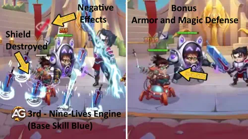
スキル解説： シールドが消えると、守られていたヒーローの弱体効果が解除され、短時間の防御強化を得る。アーマーと魔法防御の増加量はそれぞれ 物理攻撃の30% + 2400 で、持続時間は 1.5秒。チームの防御を永久に上げるものではなく、次のシールドまでの短い橋渡しと考えよう。
タリスマン別の計算式： 1: 肉球ポジティブのタリスマン
- アーマー増加量： 物理攻撃の30% + 2400 (0.3 × 119,143 + 2,400 = 38,142.9)
- 魔法防御の増加量： 物理攻撃の30% + 2400 (0.3 × 119,143 + 2,400 = 38,142.9)
タリスマン別の計算式： 2: ニャン璧のタリスマン
- アーマー増加量： 物理攻撃の30% + 2400 (0.3 × 125,143 + 2,400 = 39,942.9)
- 魔法防御の増加量： 物理攻撃の30% + 2400 (0.3 × 125,143 + 2,400 = 39,942.9)
スキル情報： バフ、弱体解除。スキルレベル：100。持続時間：1.5秒。
強化優先度： 中～高 — 弱体解除は有用だが、基本効果の防御時間は短い。まず主要なシールドを育てよう。レベル20の強化は、弱体解除の面ではるかに大きな節目になる。
九つの命のエンジン (強化スキル、レジェンダリー・レリック: レベル 20)
ゲーム内の説明： ジュリアスまたは味方がシールドを得るたびに、そのヒーローのすべての弱体効果が解除される。

スキル解説： 味方はシールドが壊れたり時間切れになったりするのを待たず、受け取った時点で弱体効果を解除できるようになる。元の1.5秒間のアーマーと魔法防御の効果は、引き続きシールド終了時に発動する。この強化が追加するのは、より早いタイミングでの弱体解除だ。
これは弱体解除の発動条件を追加する効果であり、新しいステータス依存の計算式ではない。どちらのタリスマンでも同じ発動条件が追加され、基本の防御計算は上に示したとおりとなる。
アレクサンドレのヒント： この段階で、アイリス、サトリ、テンパス、フォボスとの対戦が特に興味深くなる。シールドの付与でも弱体効果を解除できるため、味方が戦い続けられる機会が増える。行動妨害や弱体効果に頼るチームに対して、私はこの節目を高く評価している。
レリックの解放レベル： 20
| 項目 | 値 |
|---|---|
| 必要なレリックの欠片 (レベル 10–20) | 800 |
| レリックの欠片の累計 (レベル 0–20) | 1,130 |
| ヘルスボーナスの累計 (レベル 0–20) | |
| 物理攻撃ボーナスの累計 (レベル 0–20) |
強化優先度： 非常に高い — シールドを受け取ったときに弱体効果を解除すると、味方がより早く行動を再開できる。弱体効果を多用するチームへの、防御と戦闘テンポの重要な強化になる。
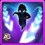
4 - ニャン璧な反射神経 (基本スキル)
ゲーム内の説明： シールドで守られているすべての味方の攻撃とスキルを加速する。進歩の道のヒーローは、より大きなボーナスを受ける。

スキル解説： シールドで守られた味方は、攻撃とスキルの使用が速くなる。ボーナスは 10% が通常の味方、 20% が進歩陣営のヒーローに適用される。シールドを維持すると、チームがより強い圧力をかけられるのはこのためだ。シールドの計算式とは異なり、ここに示す割合は2つのタリスマンで変わらない。
両方のタリスマン共通： 速度10%。進歩の道のヒーローは20%。物理攻撃が変わっても、この割合は増えない。
スキル情報： バフ。スキルレベル：80。
強化優先度： 高い — 速度が上がると、味方のダメージとスキルの回転の両方に役立つ。進歩チームはより大きなボーナスを得るため、シールドを維持する恩恵が特に大きい。
5 - 肉球の好影響 (新スキル、レジェンダリー・レリック: レベル 1)
ゲーム内の説明： 13秒ごとに、最も傷ついた味方へあらゆるダメージを吸収するシールドを付与する。その味方が失ったヘルスが多いほど、シールドは強くなる。
スキル解説： ジュリアスは13秒ごとに、最も傷ついた味方へ、基礎耐久値が 物理攻撃の200%のシールドを付与する。耐久値は 味方がヘルスを1%失うごとに1%増える。ヘルスを50%失っているなら、シールドは50%強くなり、 357,429 が肉球ポジティブの場合（238,286 × 1.5）、 375,429 がニャン璧の場合（250,286 × 1.5）の値となる。
タリスマン別の計算式： 1: 肉球ポジティブのタリスマン
- シールドの基礎耐久値： 物理攻撃の200% (2 × 119,143 = 238,286)
タリスマン別の計算式： 2: ニャン璧のタリスマン
- シールドの基礎耐久値： 物理攻撃の200% (2 × 125,143 = 250,286)
スキル情報： シールド。発動間隔：13秒。
アレクサンドレのヒント： これは最も危険な状態のヒーローを救うためのシールド。すでに失ったヘルスが多い味方ほど、保護が強くなる。
レリックの解放レベル： 1
| 項目 | 値 |
|---|---|
| 必要なレリックの欠片 (レベル 0–1) | 50 |
| レリックの欠片の累計 (レベル 0–1) | 50 |
| ヘルスボーナスの累計 (レベル 0–1) | |
| 物理攻撃ボーナスの累計 (レベル 0–1) |
強化優先度： 高い — 最初のレリック解放で、最も危険な状態の味方に狙いを定めた保護が加わり、チームが立て直す機会を増やせる。
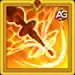
6 - 守りの踏み込み (新スキル、レジェンダリー・レリック: レベル 30)
ゲーム内の説明： ジュリアスまたは味方がシールドを持っている間、アクティブなシールドごとに、そのヒーローのアーマー貫通が増加する。

スキル解説： 現在そのヒーローにかかっている各シールドは、それぞれ 物理攻撃の15%のアーマー貫通ボーナスを与える。シールドが2つ有効な場合、例のボーナスは 35,742.9 が肉球ポジティブの場合（17,871.45 × 2）、 37,542.9 がニャン璧の場合（18,771.45 × 2）となる。このボーナスは、そのヒーロー自身のシールドに応じて決まり、ほかの味方のシールドは加算されない。
タリスマン別の計算式： 1: 肉球ポジティブのタリスマン
- アクティブなシールドごとのアーマー貫通： 物理攻撃の15% (0.15 × 119,143 = 17,871.45)
タリスマン別の計算式： 2: ニャン璧のタリスマン
- アクティブなシールドごとのアーマー貫通： 物理攻撃の15% (0.15 × 125,143 = 18,771.45)
スキル情報： バフ。
アレクサンドレのヒント： 最大の恩恵を受けるのは、ジュリアスの後ろにいるダメージ役。エヴァ、ジンジャー、ララ・クロフト、アストリッドとルーカスは、安定したアーマー貫通支援を活用できる。これが、重ねたシールドを物理チームにとって特に価値の高いものにしている。
レリックの解放レベル： 30
| 項目 | 値 |
|---|---|
| 必要なレリックの欠片 (レベル 20–30) | 1,750 |
| レリックの欠片の累計 (レベル 0–30) | 2,880 |
| ヘルスボーナスの累計 (レベル 0–30) | |
| 物理攻撃ボーナスの累計 (レベル 0–30) |
強化優先度： 非常に高い — 物理チームにとって、レリックの攻撃面で最も重要な節目。シールドを重ねることで、ダメージを担当する味方に大きなアーマー貫通ボーナスを与えられる。
ジュリアスのレルムスキル - ヒーローウォーズ・アライアンス
レルムでは、ジュリアスは軍全体への防御ボーナスと、攻撃時に確率で発生するシールドで部隊を守る。この部隊向けの効果は、ヒーロー戦のスキルとは別のもの。
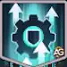
1 - 宇宙のアーマー
ゲーム内の説明： ジュリアスが技術の力で軍を守り、すべての部隊の防御を12%上げる。
スキル解説： 各部隊は 防御12%増加の恩恵を受ける。発動確率に左右されないため、ジュリアスのレルムでの保護のうち、より予測しやすい部分になる。
- 効果： すべての部隊の防御+12%
- 種類： 部隊への防御バフ
- キーワード： 軍、防御、保護
強化優先度： 高い — 私なら、確率で発生するシールドより、軍全体に安定して与えられる防御ボーナスを優先する。
2 - 星を渡る者のシールド
ゲーム内の説明： すべての部隊の攻撃は、30%の確率で、ダメージを8%吸収するシールドを2ターンの間付与する。
スキル解説： 部隊の攻撃には 30%の確率 で、 ダメージ8%を 2ターンにわたって吸収するシールドを付与する効果がある。発動すれば保護が増えるが、30%という確率は、攻撃3回ごとに必ずシールドを得られるという意味ではない。
- 発動確率： 部隊の攻撃時に30%
- ダメージ吸収率： 8%
- 持続時間： 2ターン
- 種類： 部隊のシールド
- キーワード： 攻撃、シールド、ダメージ吸収
強化優先度： 中～高 — シールドによって防御をさらに重ねられるが、確率で発動するため、宇宙のアーマーほど安定していない。
ジュリアスにおすすめのスキン - ヒーローウォーズ・アライアンス
シールドを強化し、生存力を高めるジュリアスのスキンを選ぼう。強化の優先度、正確なステータスボーナス、育成資源の使い方を解説する。
攻撃支援のために最初に育てたいのは ウィンタースキン＋で、次に 暗黒の深淵スキンが続く。物理攻撃は、ジュリアスの保護能力の多くを強化するためだ。その保護が機能する前に倒れてしまうなら、 デビルスキン＋ と デフォルトスキン を先に育てよう。以下のカードはスキンの並び順を維持しつつ、それぞれの強化の実用的な優先度を示している。
解放済みのスキンボーナスは、どの見た目を装備していても有効。スキン＋の2倍のボーナスを得るには、強化版を解放する必要がある。レベル上げに必要なスキンストーンのコストは、通常版と同じ。
デフォルトスキン
最大ボーナス： 力 +1,365
力1ポイントにつきヘルスが40増え、ジュリアスでは物理攻撃も1増える。最大レベルでは、 ヘルス +54,600 と 物理攻撃 +1,365が得られる。
必要な力のスキンストーン合計： 30,825
強化優先度： 高い — 力は生存力とスキルのステータス依存効果の両方を高めるため、序盤のバランスのよい投資になる。
仮面舞踏会スキン
最大ボーナス： 魔法防御 +10,650
必要な力のスキンストーン合計： 50,410
強化優先度： 中 — ジュリアスが魔法ダメージで倒されるなら優先度を上げよう。シールドや回復の計算値は上がらないが、その相手との戦闘には役立つ。
デビルスキン＋
最大ボーナス： ヘルス +213,290
強化版の デビルスキン＋ は、通常版スキンのヘルスボーナスを2倍にする。以下に示す 213,290 という合計値は、強化版に適用される。
必要な力のスキンストーン合計： 50,410
強化優先度： 非常に高い — ジュリアスに前衛でより長く生き残ってほしいなら優先しよう。大きなヘルスボーナスは、タンクのクラススキルの計算値も強化する。
月のスキン
最大ボーナス： クリティカルヒット率 +2,960
必要な力のスキンストーン合計： 50,410
強化優先度： 低い — ジュリアス自身のクリティカルより、シールドの強化と前衛の生存を優先したい。このボーナスは回復やシールドの計算値を増やさない。
暗黒の深淵スキン
最大ボーナス： 物理攻撃 +7,095
必要な力のスキンストーン合計： 50,410
強化優先度： 非常に高い — 物理攻撃は、シールド、必殺技の回復、一時的な防御、レベル30のアーマー貫通バフを強化する。支援能力を伸ばすうえで、特に役立つ投資の一つ。
ロマンチックスキン
最大ボーナス： タフネス +2,960
必要な力のスキンストーン合計： 50,410
強化優先度： 高い — タフネスは、編成を支えるタンクにさらなる防御力を与える。主要な物理攻撃とヘルスの強化を終えてから検討しよう。
ウィンタースキン＋
最大ボーナス： 物理攻撃 +14,190
必要な力のスキンストーン合計： 50,410
強化優先度： 非常に高い — 物理攻撃14,190は、ここに挙げたスキンの中で最大の直接的な物理攻撃ボーナス。ジュリアスが生き残れるようになったら、シールド支援を伸ばすために最優先にしている。
ジュリアスのアーティファクト強化優先度 - ヒーローウォーズ・アライアンス
ジュリアスの役割に合わせて、アーティファクトの強化を計画しよう。常時有効な力と物理攻撃、そして必殺技に連動するチーム全体へのクリティカルバフを、バランスよく考える。
基本のアーティファクト強化順： 指輪、本、最後に武器。指輪はヘルスと物理攻撃を同時に伸ばし、本は物理攻撃をさらに増やす。味方がクリティカルバフを十分に活用できる場合は、武器の価値が高まる。
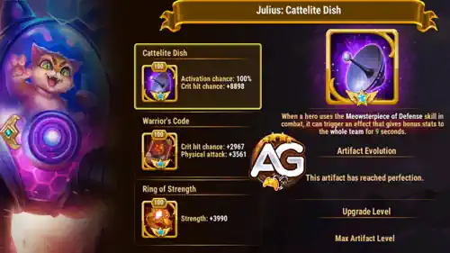
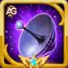
1 - 武器： ニャンテナ
ジュリアスが 防御のニャン作を使うと、武器はチーム全体にクリティカルバフを 9秒間付与できる。掲載しているレベル100の構成では、発動確率は 100% で、ボーナスは クリティカルヒット率 +8,898。
強化優先度： 高い — このバフは、必殺技の保護がある間に味方の火力を支える。私は通常、常時有効なボーナスを先に育て、その後で物理ダメージ編成向けにここへ投資する。

2 - 本： 戦士の掟
レベル100のステータス： クリティカルヒット率+2,967、物理攻撃+3,561。
強化優先度： 高い — 物理攻撃が戦闘全体を通してジュリアスの支援効果の計算値を高める。クリティカルのボーナスは、本人の火力に対する副次的な利点。

3 - 指輪： 力の指輪
レベル100のステータス： 力+3,990。ジュリアスでは、これが ヘルス +159,600 （3,990 × 40）と 物理攻撃 +3,990に相当する。
強化優先度： 非常に高い — 1回の強化で生存力とステータスに依存する支援スキルの強さを同時に伸ばせるため、アーティファクトでは最優先にしている。
ジュリアスのグリフ強化優先度
グリフは目的を明確にして育てよう。保護の強化、前衛を維持するために十分なヘルス、そして物理攻撃の圧力が問題ならアーマーを重視する。
基本のグリフ強化順： 物理攻撃、ヘルス、力、アーマー、最後にクリティカルヒット率。ジュリアスが早く倒れるなら、ヘルスを最優先にする。以下の表示は、ゲーム内のグリフの順番に合わせている。

グリフ1 - 物理攻撃
レベル80のステータス： 物理攻撃 +8,340
強化優先度： 非常に高い — 物理攻撃はシールド、必殺技の回復、レリックの支援効果を強化する。ジュリアスがすでに生き残れているなら、最初に選びたい。

グリフ2 - ヘルス
レベル80のステータス： ヘルス +122,800
強化優先度： 非常に高い — ヘルスはジュリアスを戦闘に残し、タンクのクラススキルによる防御ボーナスも増やす。前衛が崩れるなら最優先にしよう。

グリフ3 - クリティカルヒット率
レベル80のステータス： クリティカルヒット率 +4,170
強化優先度： 低い — クリティカルはジュリアス自身のダメージには役立つが、シールドや回復の計算値は強化しない。主要な支援・生存ステータスを先に仕上げよう。

グリフ4 - アーマー
レベル80のステータス： アーマー +12,850
強化優先度： 高い — アーマーは物理攻撃の圧力に耐える助けになる。物理アタッカーに突破されるなら、攻撃面の強化より先に育てよう。

グリフ5 - 力
レベル80のステータス： 力 +2,110
この力によって ヘルス +84,400 （2,110 × 40）と 物理攻撃 +2,110が得られる。
強化優先度： 高い — 力はヘルスと物理攻撃を両方増やすため、ジュリアスが同時に担う2つの役割を支えられる。
タンクのクラススキル：最も危険な状態の味方を守る
クラススキルのレベル45では、 10秒ごとに ジュリアスが、残りヘルスの割合が最も低い味方のアーマーと魔法防御を上げる。対象にはジュリアス自身も含まれる。効果時間は 5秒。
各防御ボーナスの計算式は 最大ヘルスの1% + 24750。上の最大育成構成では、 アーマーと魔法防御がそれぞれ39,971.36 となるのが肉球ポジティブの場合（1% × 1,522,136 + 24,750）、 39,171.36 となるのがニャン璧の場合（1% × 1,442,136 + 24,750）。これも、物理攻撃と並んでヘルスを重視する理由になる。
ヒーローウォーズ・アライアンスでジュリアスに対抗する方法
相手にシールドを妨害されると、ジュリアスはかなり戦いにくくなる。チームのパワーだけでなく、シールドの循環に何が起きているかを確認しよう。

レオネルはシールドを破壊するため、ジュリアスが必要とする保護を直接脅かす。シールドを失うと、そのヒーローの速度ボーナスが消え、守りの踏み込みで得るアーマー貫通も減る可能性がある。ただし、シールド終了時にはジュリアスの回復と弱体解除が残るため、シールド破壊だけで勝負の全体像が決まるわけではない。
この対戦でのアドバイス： ジャッジが最前列の味方に与える追加シールドは、ジュリアスを補強する。この保護を1枚追加したほうが、私ははるかによい結果を出せた。ジャッジがいないジュリアスは、レオネル相手に苦戦することがある。

シールドを軸にした防衛を使うとき、オヤも警戒している相手。ジュリアスは、保護、速度、レベル30の攻撃支援を維持するためにシールドを必要とする。オヤ相手では、火力にさらに資源を投入する前に、シールドの循環を維持できるか確認しよう。
アレクサンドレのヒント： レベル20のレリック強化があれば、アイリス、サトリ、テンパス、フォボスは、ジュリアスの追加の弱体解除を活かしやすい相手だと考えている。シールドを受け取ることで弱体効果を解除する機会が増えるが、支援役の選択とタイミングも引き続き重要。
ヒーローウォーズ・アライアンスにおけるジュリアスの相性
ジュリアスは、シールドを追加する味方や、シールドが生む時間とアーマー貫通を使える味方とよくかみ合う。まず検討したいのは次のヒーローたち。
アストリッドとルーカス

アストリッドとルーカスは、ジュリアスが進歩陣営の味方に与える保護と追加速度の恩恵を受ける。レリックのレベル30では、アクティブな各シールドがアーマー貫通も供給し、物理攻撃の圧力が敵のアーマーを突破するのを助ける。

クロウも、ジュリアス、ジャッジ、ネブラ、エヴァを中心にした編成で試した仲間。ジュリアスが保護と弱体解除を担い、シールドの維持が編成を支える。クロウは対戦相手に応じた選択肢であり、中核の防御支援を抜く理由とは考えていない。

ジュリアスを使った私のテストでは、エヴァが非常に高いダメージを出した。シールドがエヴァを守り、有効な間は守りの踏み込みがアーマー貫通を追加する。ネブラが攻撃バフを与え、ジャッジが後衛のエヴァを守ると、この組み合わせを最も活かせる。
ジンジャー

ジンジャーは進歩陣営の射手で、より強い保護、進歩向けの大きな速度ボーナス、アクティブなシールドごとのアーマー貫通を活かせる。ジュリアスはジンジャーを戦闘に残しつつ、重ねたシールドを物理ダメージにも貢献させる。

アイザックはシールドを追加し、物理攻撃の圧力を支える。その追加の保護は、ジュリアスの回復と弱体解除の循環に合っている。レリックのレベル30では、守られているヒーローのアーマー貫通もさらに増やせる。

ジャッジは、最前列と最後列の味方にシールドを付与する。私が使う中核では、前のジュリアスと後ろのエヴァを守ることになる。ジュリアスの周囲の保護を補強するため、この追加シールドはレオネル相手で特に重要。

ララ・クロフトは、ジュリアスのシールド、追加速度、レベル30のアーマー貫通を物理ダメージに活用できる。対戦相手に合わせるとき、ジュリアス、ジャッジ、ネブラ、エヴァの中核に加える候補の一人でもある。

私が感心した結果に、ネブラは欠かせない。攻撃を上げ、弱体効果を解除し、回復も行う。エヴァがダメージを出す間、これらの働きが編成の立て直しを助ける。ネブラがいないと、この特定の組み合わせは私のテストではかなり弱くなり、期待外れになることもある。

ポラリスも、ジュリアス編成を調整するときに検討する仲間。保護、弱体解除、シールドに依存する速度上昇の恩恵を受ける。ここで重視するのは生存支援で、アーマー貫通の恩恵が特に大きいのは、同じ編成の物理ダメージ役。
2026年のジュリアスおすすめチーム - ヒーローウォーズ・アライアンス
第一候補は、エヴァ、アイザック、ネブラ、ジャッジ、ジュリアスの進歩編成。ほかの編成は、異なる相手に対して試すための代案になる。ジュリアスの役割は一貫しており、味方を守り、シールドを維持する時間を有用な支援につなげること。
チーム1 - エヴァを守る進歩編成
最初に育てるなら、この編成を選ぶ。ジュリアスとジャッジが保護を重ね、アイザックがシールドと物理支援を追加し、ネブラが攻撃バフ、回復、弱体解除を行い、エヴァがダメージを担当する。ジュリアスのレリックがレベル30なら、シールドを持つヒーローにアーマー貫通も与えられる。
最も大切なアドバイス： この組み合わせではネブラを残そう。ネブラがいない場合、私のテストでは結果の説得力が大きく落ちた。レオネル相手ではジャッジも重要。前衛用のシールドがジュリアスを補強し、後衛用のシールドがエヴァを守る。
アレクサンドレのヒント： エヴァとジュリアスのレリックを十分に強化した、ジュリアス、ジャッジ、ネブラ、エヴァの中核は、約970,000のパワーで100万を超える相手を倒し、私を感心させた。残りの枠には、アイザック、ポラリス、ララ・クロフト、クロウが候補になる。これらの結果は中核の強さを示すもので、すべての戦闘で同じ5人目が確認されているという意味ではない。
チーム2 - ジュリアス、ジャッジ、フォリオ、アイザック、ポラリス
2番目におすすめする編成。シールド支援のためにジュリアス、ジャッジ、アイザックを一緒に使い、残りの枠にフォリオとポラリスを入れる。メンバーが変わっても、ジュリアスの保護、回復、弱体解除は役立つ。
実際に倒したい相手に対して、この編成とエヴァ編成を比較したい。レベル30のアーマー貫通ボーナスは特に物理ダメージを支えるもので、さまざまな編成に対応できる柔軟性は、より幅広い防御能力から生まれる。
チーム3 - エヴァ、ピーチ、クロウ、トリスタン
この代案は、エヴァをジュリアスの後ろに置き、ピーチ、クロウ、トリスタンを加える。ジュリアスは引き続きシールド、回復、弱体解除、レリックのアーマー貫通支援を提供するが、第一候補にあるジャッジとネブラの保護の組み合わせを再現するものではない。
対戦相手に応じた代案として考えたい。進歩の中核と同じ結果を期待する前に、特にレオネル相手では、ジュリアスが序盤を生き残れるか、エヴァが守られているかを確認しよう。
チーム4 - カイラ、グース、ピーチ、エイダン
ここではジュリアスが、カイラ、グース、ピーチ、エイダンを支援する。エヴァの中核以外でシールドを使う別の方法であり、保護によって味方が行動を続けやすくなり、シールドを持つ物理アタッカーは守りの踏み込みの恩恵を受けられる。
この編成にもジャッジがいないため、ジュリアスがどのくらい早くシールドを失うかに注意しよう。どの相手にも第一編成の代わりになると考えるより、これらのヒーローをすでに育てている場合に試したい。
チーム5 - カイラとエイダンへのおすすめ対策
カイラとエイダンの編成を攻めるとき、私が最も気に入っているジュリアス編成。ポラリス、フォリオ、ソムナ、ビルナがジュリアスの保護の後ろで戦い、回復と弱体解除が戦闘中の立て直しを助ける。
私の個人的な記録では、この種の編成への成功率は約 99%となっている。ただし、これは自分の戦闘結果であり、すべての育成状況や相手に対する勝率を保証するものではない。採用する前に、具体的な防衛編成を確認したい。
以前のジュリアスチーム - ヒーローウォーズ・アライアンスの定番編成
以前人気のあったこれらの編成は、すでに該当ヒーローを育てているなら、役立つ出発点になる。ただし、私の最新のレリック推奨より前の編成なので、過去の人気を保証として扱うのではなく、上の新しい候補と比較したい。
定番の攻撃チーム
- ジンジャー、アイザック、ネブラ、ジャッジ、ジュリアス
- ジェット、ジンジャー、アイザック、セバスチャン、ジュリアス
- アストリッドとルーカス、ジンジャー、アイザック、ジャッジ、ジュリアス
- ファフニール、アルテミス、トリスタン、ジュリアス、クリーバー
- アストリッドとルーカス、ジンジャー、アイザック、ネブラ、ジュリアス
定番の防衛チーム
- ジュリアス、ジャッジ、ネブラ、アイザック、ジンジャー
- クリーバー、ジュリアス、トリスタン、アルテミス、ファフニール
- ジュリアス、ジャッジ、セバスチャン、アイザック、ジンジャー
- チャバ、ジュリアス、トリスタン、アルテミス、ファフニール
- ジュリアス、ジャッジ、ヨルガン、アイザック、ジンジャー
進歩系の編成では、ジャッジ、アイザック、ジンジャー、ネブラ、アストリッドとルーカスといったおなじみの仲間をジュリアスの周囲に置く。ほかの編成は、進歩陣営以外のヒーローもシールドで支援できることを示している。ただし、速度と回復のボーナスがより大きいのは進歩陣営の味方。
ジュリアス攻略のまとめ
ジュリアスのレジェンダリー・レリックは、各段階でシールド支援の価値を高める。レベル1では対象を絞った保護、レベル10では回復の増加、レベル20では早いタイミングの弱体解除、レベル30では攻撃面の恩恵が得られる。
育成の方針は明確。まず生き残るのに十分なヘルスを確保し、その後で保護を強化する物理攻撃に投資する。この役割には通常ニャン璧を選ぶが、肉球ポジティブなら純粋なヘルスをさらに得られる。対人戦で印象的な結果を出したエヴァとの組み合わせでは、ジャッジとネブラが大きな差を生む。
私のテストでは、約 970,000のパワーの中核に、エヴァとジュリアスの十分に強化したレリックを組み合わせ、パワーが100万を超える相手を倒した。相手には、 クリーバー、ビルナ、ケンドル、ドリアン、エイダンや、 レオネル、ビルナ、グース、ポラリス、エイダンが含まれる。これらの勝利は、私が総パワーだけでなく、ヒーロー同士の相互作用を重視する理由を示している。
⭐ アレクサンドレの最終評価： ジュリアスは、シールドと進歩陣営のダメージ役を中心に育てるプレイヤーにとって、有力な投資先。保護能力とレリックの節目を優先し、レオネル相手ではジャッジのシールド支援を意識し、エヴァとの組み合わせを成立させるネブラの貢献も正しく評価したい。火力の増加は魅力的だが、それを維持する保護こそ、このタンクを特別な存在にしている。
ヒーローウォーズ・アライアンスのほかの攻略ガイド


意見を聞かせてね！
あなたの戦闘では、レジェンダリー・レリックを持つジュリアスはどんな活躍をしている？ タリスマンの選択、レオネルと戦った経験、最も大きな変化を感じた強化を、アレクサンドレ・ゲームズのブログコメントで共有しよう。